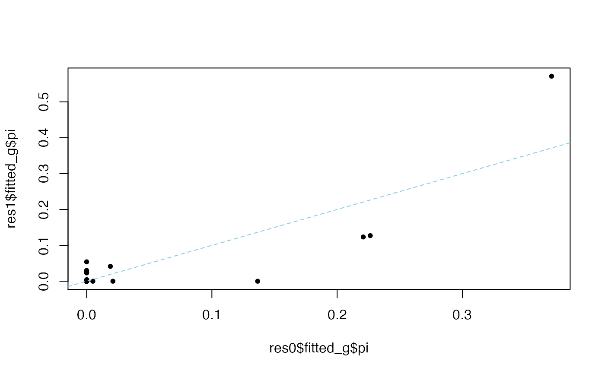

Apply mash method to data
mash(
data,
Ulist = NULL,
gridmult = sqrt(2),
grid = NULL,
normalizeU = TRUE,
usepointmass = TRUE,
g = NULL,
fixg = FALSE,
prior = c("nullbiased", "uniform"),
nullweight = 10,
optmethod = c("mixSQP", "mixIP", "mixEM", "cxxMixSquarem"),
control = list(),
verbose = TRUE,
add.mem.profile = FALSE,
algorithm.version = c("Rcpp", "R"),
pi_thresh = 1e-10,
A = NULL,
posterior_samples = 0,
seed = 123,
outputlevel = 2,
output_lfdr = FALSE
)a mash data object containing the Bhat matrix, standard
errors, alpha value; created using mash_set_data or
mash_set_data_contrast
a list of covariance matrices to use
(see normalizeU for rescaling these matrices)
scalar indicating factor by which adjacent grid values should differ; close to 1 for fine grid
vector of grid values to use (scaling factors omega in paper)
whether or not to normalize the U covariances to have maximum of 1 on diagonal
whether to include a point mass at 0, corresponding to null in every condition
the value of g obtained from a previous mash fit - an alternative to supplying Ulist, grid and usepointmass
if g is supplied, allows the mixture proportions to be fixed rather than estimated; e.g., useful for fitting mash to test data after fitting it to training data
indicates what penalty to use on the likelihood, if any
scalar, the weight put on the prior under “nullbiased” specification, see “prior”.
name of optimization method to use
A list of control parameters passed to optmethod.
If TRUE, print progress to R console.
If TRUE, print memory usage to R
console (requires R library `profmem`).
Indicates whether to use R or Rcpp version
threshold below which mixture components are ignored in computing posterior summaries (to speed calculations by ignoring negligible components)
the linear transformation matrix, Q x R matrix. This is used to compute the posterior for Ab.
the number of samples to be drawn from the posterior distribution of each effect.
A random number seed to use when sampling from the
posteriors. It is used when posterior_samples > 0.
controls amount of computation / output; 1: output only estimated mixture component proportions, 2: and posterior estimates, 3: and posterior covariance matrices, 4: and likelihood matrices
If output_lfdr = TRUE, output local false
discovery rate estimates. The lfdr tends to be sensitive to
mis-estimated covariance matrices, and generally we do not
recommend using them; we recommend using the local false sign rate
(lfsr) instead, which is always returned, even when
output_lfdr = TRUE.
a list with elements result, loglik and fitted_g
Bhat = matrix(rnorm(100),ncol=5) # create some simulated data
Shat = matrix(rep(1,100),ncol=5)
data = mash_set_data(Bhat,Shat, alpha=1)
U.c = cov_canonical(data)
res.mash = mash(data,U.c)
#> - Computing 20 x 121 likelihood matrix.
#> - Likelihood calculations took 0.00 seconds.
#> - Fitting model with 121 mixture components.
#> - Model fitting took 0.05 seconds.
#> - Computing posterior matrices.
#> - Computation allocated took 0.00 seconds.
# Run mash with penalty exponent on null term equal to 100.
# See "False disovery rates: a new deal" (M. Stephens 2017),
# supplementary material S.2.5 for more details.
set.seed(1)
simdata = simple_sims(500,5,1)
data = mash_set_data(simdata$Bhat,simdata$Shat)
U.c = cov_canonical(data)
res0 = mash(data,U.c)
#> - Computing 2000 x 151 likelihood matrix.
#> - Likelihood calculations took 0.05 seconds.
#> - Fitting model with 151 mixture components.
#> - Model fitting took 0.57 seconds.
#> - Computing posterior matrices.
#> - Computation allocated took 0.01 seconds.
res1 = mash(data,U.c,prior = "nullbiased",nullweight = 101)
#> - Computing 2000 x 151 likelihood matrix.
#> - Likelihood calculations took 0.04 seconds.
#> - Fitting model with 151 mixture components.
#> - Model fitting took 0.54 seconds.
#> - Computing posterior matrices.
#> - Computation allocated took 0.02 seconds.
plot(res0$fitted_g$pi,res1$fitted_g$pi,pch = 20)
abline(a = 0,b = 1,col = "skyblue",lty = "dashed")
